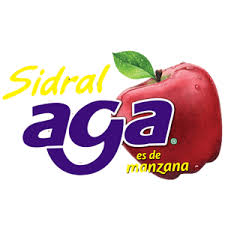

CONSUMO DEL AGUA
La cantidad de agua consumida por una empresa y por la sociedad en su conjunto puede variar significativamente según diversos factores, como el tipo de industria, la ubicación geográfica, las prácticas de gestión del agua y las necesidades de la población. Aquí hay algunas diferencias clave:
Consumo de agua por parte de una empresa:
•El consumo de agua por parte de una empresa generalmente se centra en las actividades específicas de su operación, como la producción, la refrigeración, la limpieza y el riego.
•Las industrias pesadas, como la manufactura, la minería y la agricultura, tienden a utilizar grandes volúmenes de agua en sus procesos productivos.
Consumo de agua por parte de la sociedad:
•El consumo de agua por parte de la sociedad abarca una gama más amplia de actividades, que van desde el uso doméstico (hogares) hasta el consumo comercial, industrial y agrícola.
•El agua se utiliza para el consumo humano, la agricultura, la generación de energía, el transporte, la recreación y otros fines.
.jpg)
CONSUMO DE AGUA POR EMPRESA
EMPRESA |
CANTIDAD DE AGUA QUE CONSUME |
LOGO DE LA EMPRESA |
COCACOLA
|
Esta compañía es una de las principales consumidoras de agua en México. Se estima que utiliza 55,812 millones de litros al año. |
 |
PEPSI
|
Otra empresa de bebidas, Pepsi, también tiene un alto consumo de agua, llegando a los 32,000 millones de litros anuales. |
 |
DANONE
|
Con 15,347 millones de litros al año, Danone es otra empresa que requiere grandes cantidades de agua para sus operaciones |  |
NESTLÉ
|
Esta empresa de alimentos y bebidas utiliza 9,778 millones de litros de agua anualmente. |
 |
AGA
|
Esta empresa también es una de las que más agua consume, llegando a utilizar 5 mil 268 millones de litros anualmente. |
 |
JUMEX
|
Aunque en menor cantidad, Jumex también figura en la lista, utilizando 2,626 millones de litros de agua anualmente. |
 |

Consumo de agua por parte de la sociedad
DUCHAS LARGAS: Si consideramos que una gran parte de la población toma duchas largas regularmente, podríamos estar hablando de varios billones de litros de agua al año.
LAVADO DE ROPA:Si muchas personas lavan su ropa en cargas pequeñas, esto podría sumar cientos de miles de millones de litros anualmente.
DEJAR EL GRIFO ABIERTO: Aunque parece una acción pequeña, si todos lo hicieran, podríamos estar utilizando varios miles de millones de litros de agua al año.
CONSUMO EXCESIVO DE XARNE Y ALIMENTOS PROCESADOS: La producción de alimentos procesados y carne requiere una gran cantidad de agua. Si extrapolamos esto a nivel de toda la sociedad, podríamos estar hablando de billones de litros.
USO INEFICIENTE DEL LAVAVAJILLAS: Si consideramos el uso ineficiente del lavavajillas en muchos hogares, podríamos estar gastando varios miles de millones de litros de agua anualmente.
FALTA DE CONCIENCIA SOBRE EL USO DEL AGUA : Aquí no hay un número específico, pero si todos fuéramos más conscientes de nuestro consumo diario, podríamos ahorrar miles de millones de litros al año.
.jpg)
.jpg)